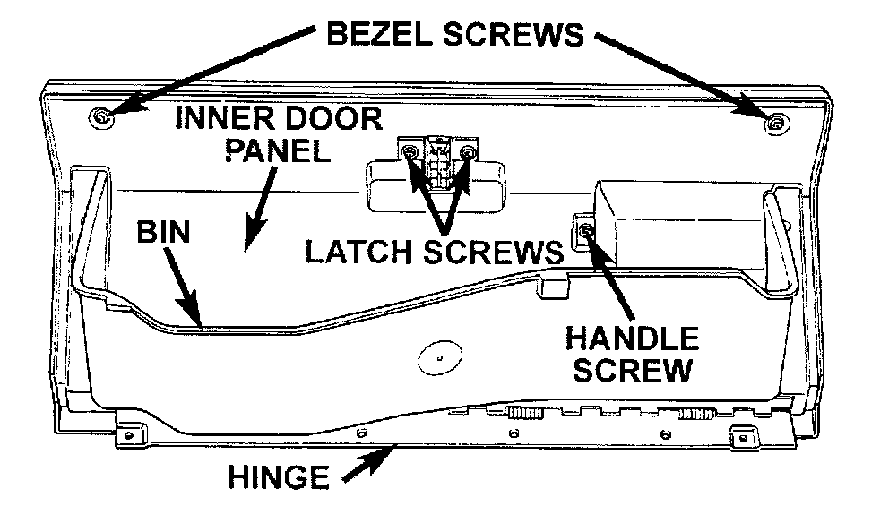
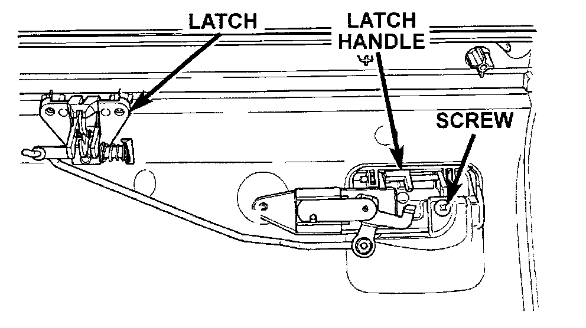
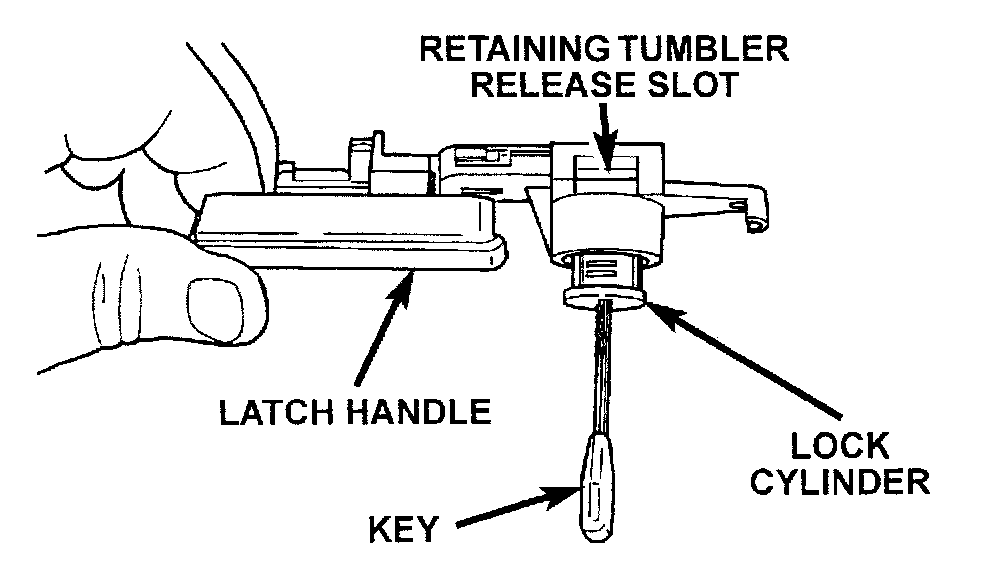

Glove Box Components
GLOVE BOX COMPONENTSWARNING: ON VEHICLES EQUIPPED WITH AIRBAGS, REFER TO PASSIVE RESTRAINT SYSTEMS BEFORE ATTEMPTING STEERING WHEEL, STEERING COLUMN, OR INSTRUMENT PANEL COMPONENT DIAGNOSIS OR SERVICE. FAILURE TO TAKE THE PROPER PRECAUTIONS COULD RESULT IN ACCIDENTAL AIRBAG DEPLOYMENT AND POSSIBLE PERSONAL INJURY.
The glove box bezel is the only component of the glove box that can be serviced without glove box removal. All other components will require the glove box to be removed from the lower right instrument panel module as described.
Glove Box Bezel
(1) Open the glove box.
Glove Box Components:

(2) Remove the two screws securing the bezel at the top of the glove box inner door panel.
(3) Pull the bezel firmly away from the outside glove box door. There is double-faced adhesive tape between the bezel and the outer door panel.
(4) Reverse the removal procedures to install.
Glove Box Hinge
(1) Remove the glove box.
(2) Remove the screws securing the glove box hinge to the glove box door.
(3) Remove the glove box hinge.
(4) Reverse the removal procedures to install.
Glove Box Bin
(1) Remove the glove box.
(2) Remove the glove box hinge as described.
(3) Remove the screws securing each side of the bin to the glove box door.
(4) Remove the glove box bin.
(5) Reverse the removal procedures to install.
Glove Box Latch And Handle
(1) Remove the glove box.
(2) Remove the glove box hinge and bin as described.
(3) Remove the two bezel screws, two latch screws and one handle screw from the inner door panel.
(4) Remove the inner panel from the glove box door.
Glove Box Latch And Handle Remove/Install:

(5) Remove the other glove box latch handle screw.
(6) Remove the latch and handle from the glove box door as a unit.
(7) Reverse the removal procedures to install.
Glove Box Lock Cylinder
(1) Remove the glove box latch and handle as.
(2) Insert the key into the glove box lock cylinder.
Glove Box Lock Cylinder Remove/Install:

(3) Insert a small screwdriver into the retaining tumbler release slot and depress the retaining tumbler.
(4) Pull the lock cylinder out of the latch handle by using a gentle twisting and pulling action on the key.
(5) Reverse the removal procedures to install.